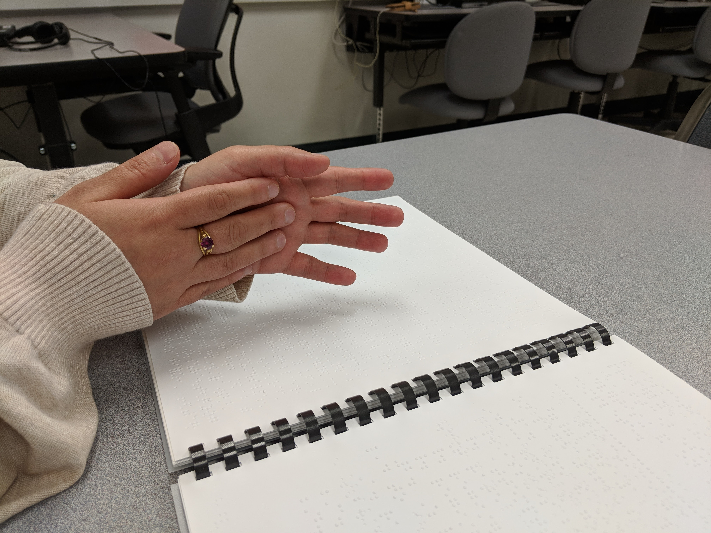

Here is my work from my time as a Disabilities Resources Assistant. To go more in depth, the GED test focuses on four different subjects - Math, Language Arts, History, and Science. It is important to understand that the GED is much different a high school class - the goal for many adults is to pass the test. Enrichment is a nice bonus and certainly included in the course, but getting that high school diploma is a far more tangible and valuable goal. In the image below, I demonstrated the concept of tectonic plates to a blind student using her hands.
Here is my work with Canfield Consortium and East Canfield Village. Canfield Consortium is a non-profit organization that supports the small neighborhood known as East Canfield Village. This is a neighborhood that has lost basic support and is mostly fending on its own. Canfield Consortium installs projects dedicated to the revitalization of the area, performing projects such as lot clean-ups, building restorations, and educational outreach events. For this project, Canfield Consortium asked us to develop a cohesive communication strategy in times of emergencies. In June of 2021, unforeseen floods devastated the neighborhood, and it was up to one single person to ascertain the safety of all the households in the area. They needed a far more efficient and effective strategy for these times of danger.
Here is my research project on Google Assistant. The main goal of this task was two-fold. First, what does the onboarding process look like for users? When people transition from one phone operating system (primarily iOS) to Google Android, there is a lot of difficulty learning how to utilize the new operating system. We set out to identify what people need to accomplish to have a successful onboarding experience. Secondly, our client asked us to identify the potential for Google Voice Assistant in the onboarding process. Is it possible for Voice Assistant to answer common questions and teach them how to start using their new Android phone?